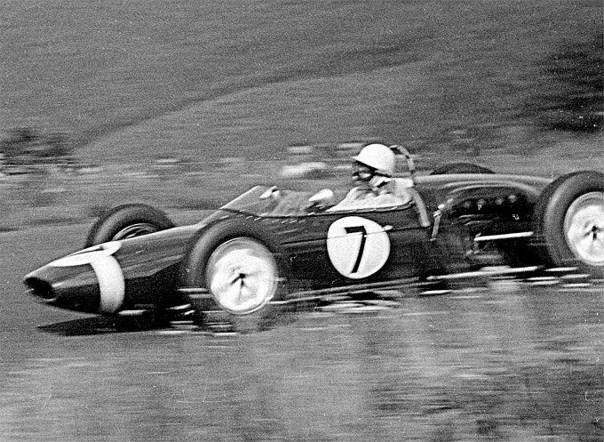

Basic information

Formula One, commonly known as Formula 1 or F1, is the highest class of international racing for
open-wheel single-seater formula racing cars sanctioned by the Fédération Internationale de l'Automobile
(FIA). The FIA Formula One World Championship has been one of the world's premier forms of motorsport
since its inaugural running in 1950. The word formula in the name refers to the set of rules all
participants' cars must follow. A Formula One season consists of a series of races, known as Grands
Prix. Grands Prix take place in multiple countries and continents on either purpose-built circuits or
closed roads.
A point-system is used at Grands Prix to determine two annual World Championships: one for the drivers,
and one for the constructors—now synonymous with teams. Each driver must hold a valid Super Licence, the
highest class of racing licence the FIA issues, and the races must be held on Grade One tracks, the
highest grade rating the FIA issues for tracks.
Formula One cars are the world's fastest regulated road-course racing cars, owing to high cornering
speeds achieved by generating large amounts of aerodynamic downforce, much of which is generated by
front and rear wings, as well as underbody tunnels. The cars depend on electronics, aerodynamics,
suspension, and tyres. Traction control, launch control, and automatic shifting, and other electronic
driving aids were first banned in 1994. They were briefly reintroduced in 2001, and have more recently
been banned since 2004 and 2008, respectively.
With the average annual cost of running a team—designing, building, and maintaining cars, pay,
transport—at approximately £220 million, Formula One's financial and political battles are widely
reported. The Formula One Group is owned by Liberty Media, which acquired it in 2017 from private-equity
firm CVC Capital Partners for US$8 billion.
F1 History

Formula One originated from the World Manufacturers' Championship (1925–1930) and European Drivers'
Championship (1931–1939). The formula is a set of rules that all participants' cars must follow. Formula
One was a formula agreed upon in 1946 to officially become effective in 1947. The first Grand Prix in
accordance with the new regulations was the 1946 Turin Grand Prix, anticipating the formula's official
start. Before World War II, a number of Grand Prix racing organisations made suggestions for a new
championship to replace the European Championship, but due to the suspension of racing during the
conflict, the new International Formula for cars did not become formalised until 1946, to become
effective in 1947. The new World Championship was instituted to commence in 1950.
The first world championship race, the 1950 British Grand Prix, took place at Silverstone Circuit in the
United Kingdom on 13 May 1950. Giuseppe Farina, competing for Alfa Romeo, won the first Drivers'
World Championship, narrowly defeating his teammate Juan Manuel Fangio. Fangio won the championship in
1951, 1954, 1955, 1956, and 1957. This set the record for the most World Championships won by a
single driver, a record that stood for 46 years until Michael Schumacher won his sixth championship in
2003.
Juan Manuel Fangio's 1951 title-winning Alfa Romeo 159
A Constructors' Championship was added in the 1958 season. Stirling Moss, despite often being regarded
as one of the greatest Formula One drivers in the 1950s and 1960s, never won the Formula One
championship. Between 1955 and 1961, Moss finished second in the championship four times and third
the other three times. Fangio won 24 of the 52 races he entered—still the record for the highest
Formula One winning percentage by an individual driver. National championships existed in South
Africa and the UK in the 1960s and 1970s. Promoters held non-championship Formula One events for many
years. Due to the increasing cost of competition, the last of these was held in 1983.
This era featured teams managed by road-car manufacturers, such as Alfa Romeo, Ferrari, Mercedes-Benz
and Maserati. The first seasons featured prewar cars like Alfa Romeo's 158, which were front-engined,
with narrow tyres and 1.5-litre supercharged or 4.5-litre naturally aspirated engines. The 1952 and 1953
seasons were run to Formula Two regulations, for smaller, less powerful cars, due to concerns over the
dearth of Formula One cars. When a new Formula One formula for engines limited to 2.5 litres was
reinstated for the 1954 world championship, Mercedes-Benz introduced its W196, which featured things
never seen on Formula One cars before, such as desmodromic valves, fuel injection, and enclosed
streamlined bodywork. Mercedes drivers won the championship for the next two years, before the team
withdrew from all motorsport competitions due to the 1955 Le Mans disaster.